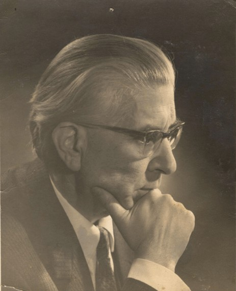
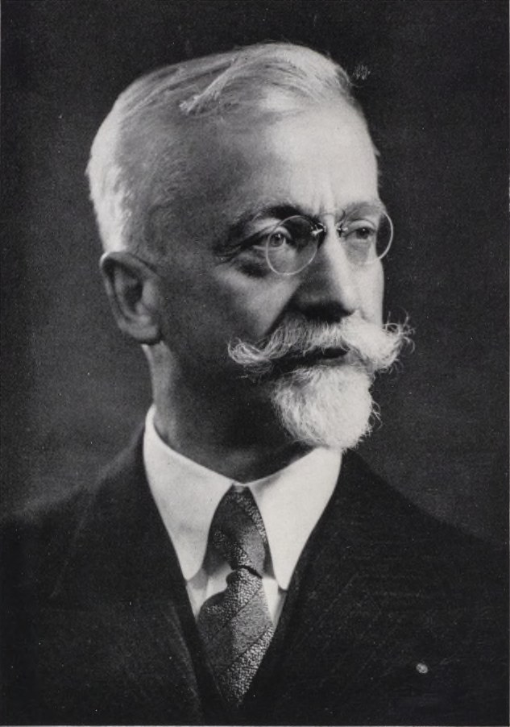
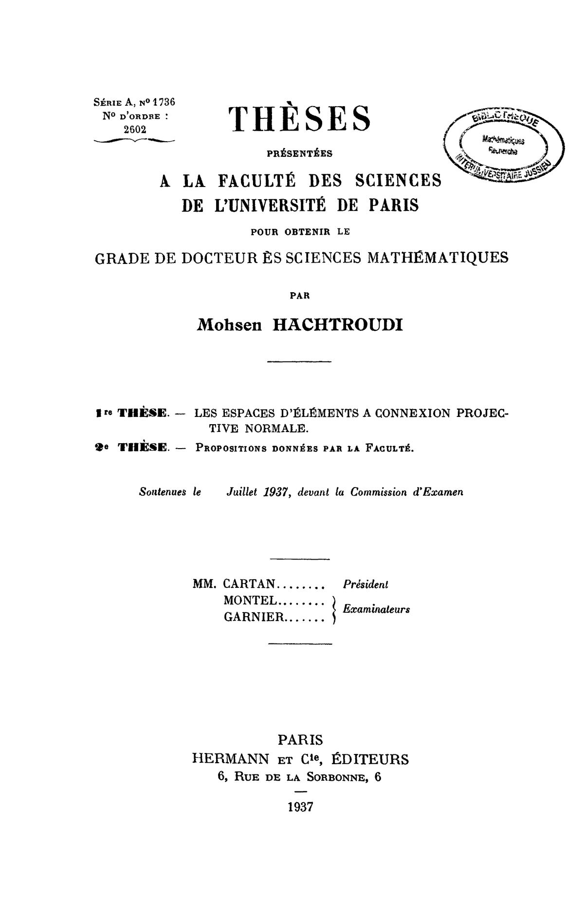
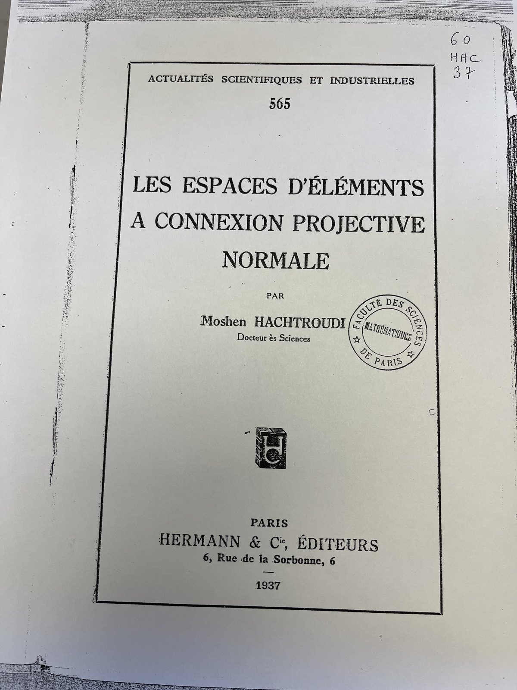
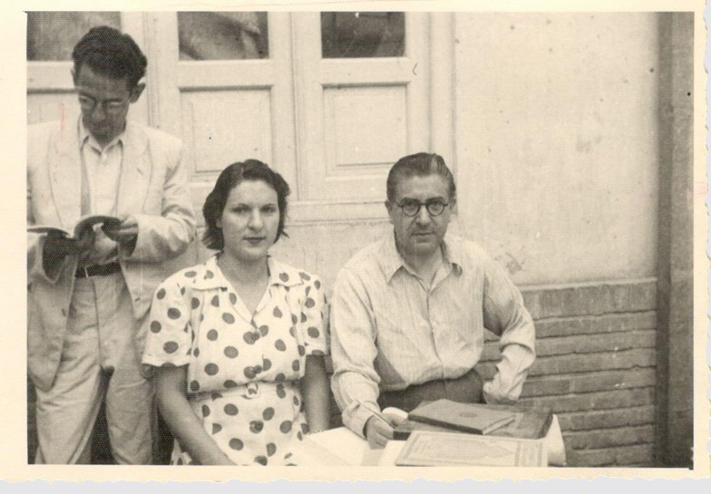
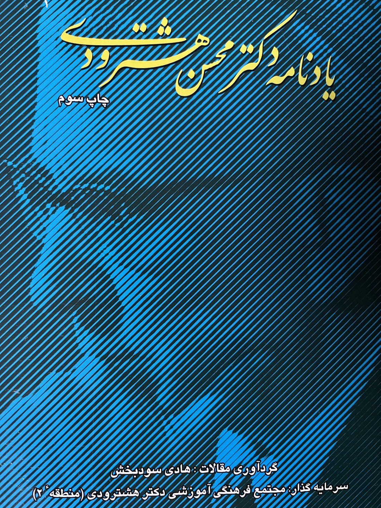
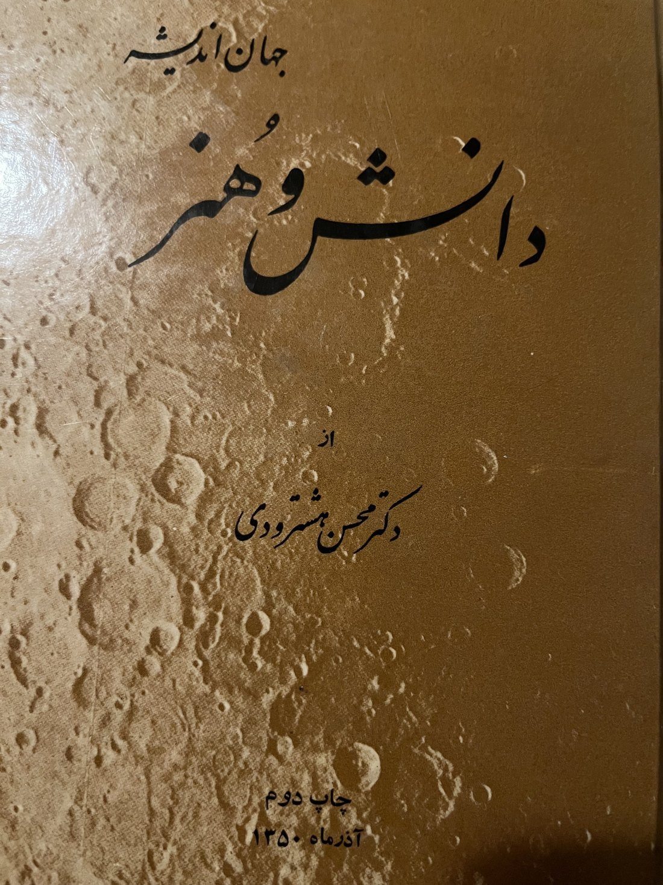
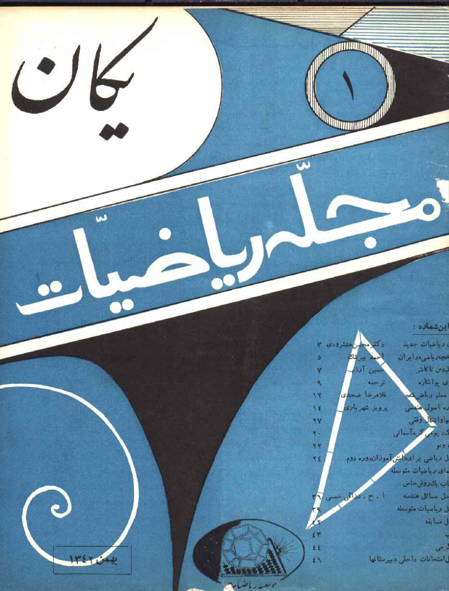

Mohsen Hachtroudi: A Bridge Between Two Mathematical Traditions
One of the founders of modern mathematics in Iran, a student of Élie Cartan, and the first Iranian mathematician to gain international recognition for original research in modern times.
 Masoud Khalkhali
Masoud Khalkhali

Mohsen Hachtroudi (also transliterated as Hashtroudi or Hashtroodi) was one of the founders of modern mathematics in Iran and the first Iranian mathematician to gain international recognition for original research in modern times. His importance rests not only on his pioneering role in the development of mathematics in Iran, but also on the lasting influence of his mathematical contributions, which continue to resonate in differential geometry, and the theory of differential equations. Today the term Hachtroudi connection appears naturally in the literature on Cartan geometry, the geometry of differential equations, projective differential geometry, CR geometry, and, more recently, parabolic geometries. Ironically, many geometers recognize the term ‘Hachtroudi connection’ without knowing much about the mathematician whose name it bears.
The aim of this article is twofold. On the one hand, it seeks to present an account of Hachtroudi’s life and his decisive role in the development of modern mathematics in Iran. On the other hand, and perhaps more importantly, it aims to explain the mathematical significance of his work from a contemporary geometric viewpoint. Hachtroudi’s doctoral thesis, written under the supervision of Élie Cartan in Paris in the 1930s, contains ideas that anticipated several themes which later became central in differential geometry. His construction of a canonical projective connection associated with completely integrable systems of second-order partial differential equations has become known as the Hachtroudi connection.
Beginning with Shiing-Shen Chern’s reinterpretation of Hachtroudi’s projective connection [13], subsequent work by Jürgen Moser, Noboru Tanaka, David Grossman, and others revealed increasingly deep connections between Hachtroudi’s construction, Cartan’s method of equivalence, the geometry of differential equations, and CR and parabolic geometries [14, 43, 18]. More recently, Joël Merker, partly in collaboration with Masoud Sabzevari, has developed these connections further, both through the Cartan equivalence problem for Levi-nondegenerate real hypersurfaces and through the relation between CR geometry and systems of partial differential equations [32, 33, 34]. In particular, Merker’s work on the vanishing of Hachtroudi curvature and local equivalence to the Heisenberg pseudosphere gives a direct modern continuation of the geometric ideas originating in Hachtroudi’s thesis [35].
Rather than presenting Hachtroudi’s mathematics solely in its historical form, we shall interpret it from the perspective of modern differential geometry. This allows one to appreciate not only the originality of his ideas but also their continuing influence on contemporary mathematics.
This paper is organized into two complementary parts. The first is devoted to Hachtroudi’s life and intellectual legacy: his education in Iran and France, his return to Iran, his decisive role in the development of modern mathematics and higher education in the country, and his broader presence as a teacher, essayist, science promoter, and public intellectual. The second part examines his mathematical work, beginning with Cartan’s method of equivalence and leading to Hachtroudi’s construction of a canonical projective connection and its curvature. We then trace the later reappearance of these ideas in CR geometry through the work of Chern and Moser and their subsequent development in modern Cartan and parabolic geometry.
Early Life and Education
Mohsen Hachtroudi was born on 12 January 1908, in Tabriz, Iran, and died on 4 September 1976, in Tehran.1 He belonged to a distinguished family whose public and intellectual activities were closely connected with one of the most important periods of modern Iranian history. His father, Sheikh Esmā’il Mojtahed, was a prominent clergy and religious scholar and an adviser to Sheikh Mohammad Khiābāni, one of the leading figures of the Constitutional Movement in Azerbaijan. The Constitutional Revolution (1905–1911) profoundly transformed the political and intellectual life of Iran, introducing parliamentary government and stimulating educational and cultural reforms. Hachtroudi thus grew up in an environment where scholarship, public service, and intellectual independence were deeply valued.
Equally influential was Hachtroudi’s elder brother, Mohammad Zia Hachtroudi, whom Mohsen himself later described as the person to whom he owed “the foundation of my education” [28]. Mohammad Zia became a distinguished writer, editor, and literary critic, and played an important role in the emergence of modern Persian literature. He was among the earliest intellectuals to recognize the importance of Nima Yushij and helped introduce his modern poetry to a wider audience through some of the earliest anthologies of contemporary Persian literature.
It is a striking historical coincidence that the two Hachtroudi brothers became pioneers of modernization in two different spheres of Iranian intellectual life. While Mohammad Zia helped introduce modern Persian literature to a new generation of readers, Mohsen became one of the founders of modern mathematical research and education in Iran. Both combined deep respect for the classical tradition with a firm belief that intellectual renewal required engagement with the most advanced ideas of their time.
Mohsen Hachtroudi’s early education took place in Tehran. After attending the Sirus and Aghdasieh primary schools, he entered the celebrated Dār al-Fonūn, the first modern institution of higher learning in Iran. Founded in 1851 by Amir Kabir, Dār al-Fonūn played a central role in introducing modern science and mathematics into Iran and educated many of the country’s future scientists, engineers, physicians, and statesmen. Hachtroudi graduated from Dār al-Fonūn in 1925, already displaying exceptional mathematical ability.
Hachtroudi’s education abroad did not constitute a single uninterrupted period. After graduating from Dār al-Fonūn he studied medicine for several years and then made his first trip to Europe, after which he returned to Iran. Upon his return, he enrolled in the Higher Teachers’ College (Dār al-Moʿallemīn-e Markazī), where he chose mathematics as his field of study and graduated as a member of its second graduating class. Only afterward did he make a second trip to France, where he studied at the Faculty of Sciences of the University of Paris. There he became a student of the great French geometer Élie Cartan (1869–1951), whose revolutionary work on Lie groups, differential geometry, moving frames, and the method of equivalence was transforming the subject.

In 1937 he was awarded the French Doctorat d’État, then the highest academic doctorate in France, for his thesis
Sur les espaces d’éléments à connexion projective normale.
In this work he constructed the canonical projective connection that would later become known as the Hachtroudi connection. His thesis was published shortly afterwards in Paris in the same year [20].

The thesis belongs to Cartan’s program of attaching canonical geometric structures to differential equations and solving equivalence problems through curvature. Hachtroudi considered completely integrable systems of second-order partial differential equations and associated with them a canonical normal projective connection. The curvature of this connection provides the complete obstruction to transforming the system into its flat model. This construction, now commonly referred to as the Hachtroudi connection, significantly generalized Cartan’s earlier work [6] and anticipated several ideas that became central decades later in the theories of CR geometry, Cartan geometries, and parabolic geometries.

Although the immediate reception of Hachtroudi’s thesis was limited, its influence steadily grew. In particular, Shiing-Shen Chern later recognized that the projective connection arising from the Segre family of a Levi nondegenerate CR hypersurface is, essentially, the same construction introduced by Hachtroudi. Through this observation, Hachtroudi’s work became directly linked with the celebrated theory of Chern and Moser on the local equivalence of real hypersurfaces in complex manifolds.
A Generation Shaped by Educational Reform
Mohsen Hachtroudi belonged to a remarkable generation of Iranian scholars whose education coincided with arguably the most ambitious programs of modernization in the country’s history. During the two decades between the rise of Reza Shah Pahlavi in 1925 and the end of his reign in 1941, Iran underwent profound institutional, social, and educational transformations. Pursuing ideals of the constitutional revolution of 1906 and its founding fathers, the government of Reza Shah initiated an extensive program of state building that included the expansion of modern administration, the construction of railways and roads, the development of industry, and the establishment of new educational institutions. Equally important was the emergence of a modern professional middle class consisting of teachers, engineers, physicians, lawyers, civil servants, and scientists, many of whom would become the intellectual leaders of the country during the following decades.
Education occupied a central place in these reforms. Beginning in the 1920s, the government undertook a comprehensive reorganization of the school system based largely on European, and especially French, models. Modern elementary and secondary schools were established throughout the country, teacher-training colleges were expanded, and primary education was made compulsory. These reforms dramatically increased school enrollment and created, for the first time, a national system of secular public education reaching far beyond the major cities.
One of the most enduring achievements of this period in the area of education was the creation of the University of Tehran. The law establishing the university was approved by the Majles in March 1934, and the university was formally inaugurated on 4 February 1935 with six faculties, including the Faculty of Sciences, where Hachtroudi would later spend most of his academic career. Conceived as the country’s first modern university, the University of Tehran brought together several existing professional schools into a single institution devoted to both teaching and research. The organization of the university followed largely the French model, reflecting the educational ideals of many of its founders, including Ali-Asghar Hekmat and Isa Sadiq, who had themselves studied in Europe.
A particularly important component of these educational reforms was the establishment of a systematic program of state scholarships for study abroad. On 22 May 1928, the Iranian Parliament (Majlis) passed the Law for Sending Students Abroad (in Persian, Qānun-e E’zām-e Mohassel be Khārejeh). The law required the government to provide increasing annual appropriations for sending students from both the capital and the provinces abroad for advanced study in scientific and technical fields determined by the state. Candidates were to be selected through a competitive examination administered by the Ministry of Education, with preference, under otherwise equal conditions, given to holders of secondary, technical, or higher-school diplomas. The law also stipulated that at least thirty-five percent of the students sent abroad each year were to study education and teacher training.
Beginning with this program, talented young Iranians could compete for state support to continue their education at leading European universities, principally in France, Germany, Switzerland, and Great Britain. Between 1928 and 1933 alone, approximately 640 students were sent abroad under this program. The significance of the reform went beyond the number of students who benefited from it. By explicitly extending the program to candidates from both Tehran and the provinces and making competitive examination a central criterion of selection, it helped broaden access to advanced European education beyond the relatively narrow privileged circles for whom such opportunities had previously been available. Hachtroudi belonged to the generation of young Iranian scholars whose education and subsequent careers were profoundly shaped by this new policy.
Mohsen Hachtroudi was one of the most distinguished members of this generation. After completing his studies in Iran, he received a government scholarship to continue his education in France, where he entered the University of Paris and came under the supervision of Élie Cartan. His subsequent career illustrates both the success of this educational policy and the remarkable scientific achievements of the first generation of Iranian mathematicians trained in the great European mathematical schools.
The speed with which Hachtroudi mastered modern mathematics during his years in Paris is all the more remarkable when viewed in the context of mathematical education in Iran at the time. During the 1920s, higher education in mathematics was still in its infancy. The curriculum at institutions such as Dār al-Fonūn emphasized the classical subjects required for engineering, military science, and teacher training, while the revolutionary developments that had transformed mathematics in Europe during the late nineteenth and early twentieth centuries, concepts like Lie groups, differential geometry, topology, functional analysis, and abstract algebra, were almost entirely absent from university instruction. Research mathematics, in the modern sense, had not yet taken root in Iran.
Against this background, Hachtroudi’s intellectual development was nothing short of extraordinary. Within only a few years of study at the University of Paris he not only acquired a thorough command of the modern language of differential geometry but also entered one of the most active research schools in the world under the direction of Élie Cartan. His doctoral thesis demonstrates a complete mastery of Cartan’s method of equivalence, generalized spaces, projective connections, and the geometry behind differential equations.
In fact the mathematical environment that Hachtroudi encountered in Paris was exceptionally stimulating. During the 1930s the Faculty of Sciences of the University of Paris was one of the world’s foremost centers for differential geometry. At its heart stood Élie Cartan, whose revolutionary work on Lie groups, moving frames, generalized spaces, and the method of equivalence had fundamentally reshaped modern geometry. Around Cartan there had formed an outstanding school of young geometers and analysts, including Charles Ehresmann, André Lichnerowicz, and later Shiing-Shen Chern, who would themselves become leading figures in twentieth-century mathematics. Hachtroudi was thus immersed in one of the most vibrant mathematical communities of the period, where geometry, differential equations, topology, and mathematical physics interacted in a remarkably fruitful way.
Hachtroudi took full advantage of this unique intellectual environment. In only a few years he progressed from a student educated within the newly developing Iranian university system to a researcher capable of contributing original ideas at the highest international level. His doctoral dissertation exhibits not merely a mastery of Cartan’s methods but also an independence of thought that enabled him to extend them in a substantial and original direction. It is perhaps the clearest indication of his mathematical maturity that Cartan himself later referred to Hachtroudi’s thesis as “une grande généralisation” of his own earlier work, while nearly forty years later Shiing-Shen Chern identified Hachtroudi’s projective connection as the geometric structure underlying important aspects of the local geometry of Levi-nondegenerate CR hypersurfaces. These two independent assessments, coming from two of the twentieth century’s greatest geometers, leave little doubt that Hachtroudi’s thesis occupies a distinguished place in the development of Cartan’s method of equivalence in modern differential geometry. We shall return to this theme in more detail in the second part of this paper.
Return to Iran and Academic Career
After receiving his Doctorat d’État under Élie Cartan in Paris in 1937, Hachtroudi returned to Iran at a decisive moment in the country’s educational history. The University of Tehran, founded only a few years earlier in 1934 as the first modern university in Iran, had become the centerpiece of an ambitious national program of higher education and scientific modernization. Hachtroudi belonged to the first generation of Iranian mathematicians trained at the highest international level who returned home with the explicit goal of building modern scientific research and university education in Iran. He joined the Faculty of Sciences of the University of Tehran as an Associate Professor and was promoted to full Professor in 1942.
Hachtroudi’s academic career soon extended well beyond teaching and research. In 1943 he was appointed Director of Education for Tehran, reflecting the confidence placed in him by the country’s educational authorities. In 1952 he became President of the University of Tabriz, where he played an important role in strengthening higher education in northwestern Iran. Later, in 1958, he served as Dean of the Faculty of Sciences of the University of Tehran. Throughout these years he remained deeply committed to the development of mathematics, combining research, teaching, and academic leadership with remarkable energy.
In 1945 Hachtroudi married Robāb Modiri. They had three children: two daughters, Farānak and Faribā, and one son, Rāmin.

Scientifically, Hachtroudi continued to develop many of the ideas initiated in his doctoral dissertation. His research ranged over projective and affine differential geometry, Weyl geometry, non-holonomic spaces, differential invariants of systems of differential equations, analytical mechanics, Riccati equations, and continued fractions. Much of this work remained firmly rooted in the geometric philosophy of Cartan’s school, seeking intrinsic geometric structures underlying differential equations and transformation groups. Several of his French monographs, published by the University of Tehran, testify to the breadth and originality of these investigations [21, 22, 23].
Hachtroudi’s concern with mathematical education was not confined to the university. He also wrote mathematics for younger readers and high-school students, presenting elementary topics from a distinctly modern and often surprisingly advanced point of view [25, 26]. These writings are characteristic of his broader educational outlook: rather than treating school mathematics merely as a collection of techniques, he sought to expose young readers to the ideas, structures, and problems that give mathematics its intellectual interest.
Although based primarily in Tehran, Hachtroudi maintained close scientific contacts with mathematicians throughout Europe and North America. His autobiography records periods of study abroad, including a visit in the autumn of 1951 as a member of the School of Mathematics at the Institute for Advanced Study in Princeton [29]. He also maintained scientific correspondence and friendships with many leading mathematicians of his time, among them Charles Ehresmann, André Lichnerowicz, Jan Schouten, Shiing-Shen Chern, Oscar Zariski, Dirk Struik, and several others.2 These international contacts enabled him to remain closely connected with contemporary developments in geometry while helping to introduce modern mathematical ideas into Iran.
Perhaps Hachtroudi’s greatest contribution was as a teacher and builder of institutions. He regarded the university not merely as a place for transmitting knowledge but as the foundation upon which a modern scientific community could be built. Through his lectures, supervision of students, and participation in academic life, he introduced several generations of young Iranian mathematicians to modern differential geometry and contemporary mathematical research. Many of his students later became professors and researchers who played leading roles in the development of mathematics at universities throughout Iran. For this reason Hachtroudi is widely regarded as one of the founders of modern mathematical research and education in twentieth-century Iran.
Beyond his scientific achievements, Hachtroudi was widely admired for the breadth of his intellectual interests. He was deeply interested in philosophy, literature, Persian poetry, the history of science, and the cultural life of Iran. Through numerous public lectures, essays, radio broadcasts, and articles in journals such as Yekān, he worked tirelessly to communicate modern scientific ideas to a broader educated audience. This breadth of vision made him one of the leading public intellectuals of his generation rather than simply a distinguished mathematician. The Encyclopedia Iranica article by Tahvildar-Zadeh and Majidi gives a concise picture of Hachtroudi’s social life, and his activities and impact beyond mathematics as a public intellectual and educator in Iran [42].
A particularly vivid portrait of Hachtroudi is given by Abbas Milani in his biographical essay in Eminent Persians [36]. Milani portrays him not simply as an outstanding mathematician, but as an unusually broad and charismatic intellectual personality. He emphasizes Hachtroudi’s extraordinary mathematical gifts and memory, his independence of mind, his devotion to his students, and the remarkable range of his interests in science, philosophy, literature, and poetry. His daughter’s memorable observation that “mathematics was his Mecca,” quoted by Milani, captures something essential about Hachtroudi’s intellectual outlook: mathematics was for him not merely a profession, but part of a larger vision of nature and human existence. Milani’s account thus provides a valuable portrait of the man behind the mathematics and helps explain the unusually deep impression Hachtroudi left on his students and on the wider intellectual life of his generation.
Hachtroudi’s lasting reception and influence in Iran is reflected in the memorial volume edited by his former student Hadi Soudbakhsh, which contains contributions by many of Hachtroudi’s students, colleagues, and friends, several of whom later became leading mathematicians and professors at universities throughout Iran [40]. Together with four essays by Hachtroudi himself, the volume provides a vivid portrait of his scientific achievements, his generosity as a teacher, and his enduring influence on the intellectual and cultural life of modern Iran. This influence is particularly evident in the special memorial issue of Yekān published shortly after his death, which brought together recollections and assessments of his scientific, educational, and intellectual legacy [46].
Hachtroudi’s influence continued long after his death on 4 September 1976. In recognition of his scientific achievements and his decisive role in the development of modern mathematics in Iran, the Iranian Mathematical Society established the Professor Mohsen Hachtroudi Prize in his memory, awarded for distinguished work in geometry and topology.

Hachtroudi the Essayist
To the general public in Iran, Mohsen Hachtroudi was known not only as a distinguished mathematician but also as one of the country’s leading scientific essayists and public intellectuals. Throughout his career he devoted considerable effort to communicating scientific ideas to a broad audience. His lectures, essays, newspaper articles, and radio broadcasts introduced generations of Iranian readers and listeners to modern mathematics, physics, cosmology, philosophy of science, and the relationship between science and culture.
Unlike many popularizers of science, Hachtroudi never regarded science as an isolated intellectual activity. For him, scientific thought, philosophy, literature, music, and the visual arts were different manifestations of the same creative human spirit. This broad humanistic vision characterizes much of his non-technical writing and explains why his essays continue to be read long after the scientific questions that motivated some of them have evolved.
The breadth of Hachtroudi’s interests was not merely that of a mathematician with literary tastes; mathematics, science, philosophy, and poetry seem to have formed for him parts of a single intellectual vision. Milani aptly describes him as “more in the spirit of a Renaissance man than a monomaniacal mathematician” [36].
Perhaps the best illustration of this aspect of Hachtroudi’s work is the volume Dāneš o Honar (“Science and Art”) in Persian, first published in 1961 and reprinted several times thereafter [24]. The book collects a number of lectures and essays, some originally delivered before public audiences and others previously published in newspapers and magazines. Together they reveal the remarkable breadth of his intellectual interests. Among the subjects discussed are the relationship between science, literature, and art; the nature of scientific and artistic creativity; the geometry and structure of the universe; Einstein’s theory of relativity and the nature of physical reality; mathematical logic and the foundations of mathematics; the principle of causality; the place of humanity in the cosmos and the exploration of space; and contemporary Persian literature and literary criticism. Read today, these essays reveal not only Hachtroudi’s scientific culture but also his remarkable ability to communicate modern scientific ideas to a broad educated audience.
A striking feature of the collection is its remarkable range. Alongside essays on mathematical logic, relativity, and the geometry of the universe, one finds thoughtful discussions of modern Persian poetry, literary criticism, the search for extraterrestrial life, the exploration of space, and even contemporary speculation about flying saucers. This unusual combination reflects Hachtroudi’s conviction that science, philosophy, and the humanities form parts of a single intellectual enterprise.

Several themes recur throughout these essays. One is Hachtroudi’s conviction that scientific thinking is fundamentally universal, whereas art reflects the particular historical and cultural experience of a people. Another is his insistence that genuine scientific progress requires creativity no less than artistic creation. Throughout the volume he argues that science and art should not be viewed as opposing activities but as complementary expressions of the human mind.
Another revealing example of Hachtroudi’s broader intellectual writing is his short book Seyr-e Andishe-ye Bashar (The Course of Human Thought) [27]. Unlike the collection of essays in Science and Art, this is a more focused reflection on the historical development of scientific thought and on the nature and teaching of science. It illustrates particularly well Hachtroudi’s conviction that science should be understood not merely as a body of established results, but as a continuing development of human thought.
These ideas were not confined to his published essays. Hachtroudi was also a gifted public speaker whose radio lectures introduced a wide audience to contemporary developments in mathematics, physics, and astronomy. Although only a small fraction of these broadcasts has survived, they testify to his extraordinary ability to explain difficult scientific ideas in clear, elegant Persian while preserving their intellectual depth. His radio series Marzhā-ye Dāneš (“Frontiers of Knowledge”) became particularly well known and is now recognized as an important part of Iran’s scientific and cultural heritage.
One particularly revealing example of Hachtroudi’s educational vision appeared in the very first issue of Yekān. Rather than presenting elementary material, he chose to introduce his young readers to the language of modern mathematics in an article entitled “Foundations of Modern Mathematics.” Beginning with the basic notions of set theory, he proceeded to discuss the fundamental algebraic structures of groups, rings, modules, and fields before introducing the ideas of non-Euclidean geometry. Such a choice of topics was extraordinary for its time. In the mid-1960s, these subjects were still unfamiliar to many undergraduate mathematics students in Iran, let alone high-school students. Hachtroudi firmly believed that mathematically gifted students should be exposed, at an early stage, to the conceptual foundations of modern mathematics rather than merely to its computational techniques. In retrospect, this article was remarkably ahead of its time and illustrates both his deep understanding of contemporary mathematics and his visionary approach to mathematical education.

Hachtroudi’s decision to begin with sets and algebraic structures also reflects the international movement toward the modernization of mathematics education that emerged during the 1950s and 1960s. His article demonstrates that he was fully aware of these developments and recognized the importance of introducing their central ideas to Iranian students at an early stage.
Hachtroudi’s influence therefore extended far beyond the university classroom. For several decades he served as one of the principal interpreters of modern science for the educated public in Iran. In this respect, he belonged to a broader twentieth-century tradition represented by figures such as Hermann Weyl, George Gamow, and Jacob Bronowski: scientists and intellectuals who regarded reflection on the meaning of science, and the communication of scientific ideas to a wider public, as an essential part of their intellectual mission.
A Bridge Between Two Mathematical Traditions
The mathematical achievements of Mohsen Hachtroudi cannot be understood apart from the remarkable historical moment in which he lived. He belonged to the first generation of Iranian scholars whose education coincided with the birth of modern higher education in Iran. After receiving his scientific training under Élie Cartan in Paris, he returned to devote his career to the development of mathematics in his homeland. In doing so, he became a bridge between two great mathematical traditions: the French school of modern differential geometry and the rich but long-interrupted scientific tradition of Iran, whose medieval mathematicians had once stood among the foremost contributors to world mathematics. Hachtroudi did not merely import French differential geometry to Iran; he helped reconnect a great classical mathematical civilization with the modern international mathematical community
His scientific work, centered on the geometry of differential equations and the method of equivalence, continues to influence contemporary differential geometry nearly a century after its creation. What initially appeared as a highly specialized study of systems of second-order partial differential equations has become an integral part of several branches of modern geometry, including Cartan geometries, projective differential geometry, CR geometry, and parabolic geometries. Today the Hachtroudi connection is recognized as one of the earliest examples of a canonical Cartan geometry naturally associated with a nonlinear system of differential equations.
The subsequent sections of this article are devoted to explaining these mathematical developments in detail. Beginning with Cartan’s method of equivalence, we shall describe Hachtroudi’s construction of the canonical projective connection, its curvature and flatness criterion, its reinterpretation in terms of contact and incidence geometry, and finally its remarkable reappearance in CR geometry through the work of Chern and Moser. In this way we hope to demonstrate that Hachtroudi’s work occupies a natural and enduring place in the history of modern differential geometry.
Hachtroudi in His Own Words
The following autobiographical sketch was written by Mohsen Hachtroudi in Persian for the mathematics magazine Yekān in 1964 [28]. It provides a rare first-hand account of Hachtroudi’s education, his teachers, his mathematical work, and his scientific career. Equally revealing is the breadth of his intellectual interests, extending well beyond mathematics to education, literature, and culture; qualities that were repeatedly emphasized by his students, colleagues, and contemporaries.
I was born in Tabriz on 22 Dey 1286 (12 January 1908).1 I completed my primary education at the Aghdasieh and Sirus schools, and my secondary education at Dār al-Fonūn. In 1304 (1925) I graduated from Dār al-Fonūn and then studied medicine for several years.
My first trip to Europe was followed by a return to Iran. Upon my return, I enrolled in the Higher Teachers’ College ( Dār al-Moʿallemīn-e Markazī), which had recently been established, where I chose mathematics as my field of study. I graduated as a member of its second graduating class.
I then made a second trip to France, where I studied at the Faculty of Sciences of the University of Paris. I obtained the degree of Licence and, in 1937, received the degree of Doctorat d’État from the Sorbonne.
In 1315 (1937) I returned to Iran and was appointed Associate Professor in the Faculty of Sciences and at the Higher Teachers’ College. In 1320 (1942) I was promoted to the rank of Professor. Thereafter, in addition to my university professorship, I held the following positions. In 1321 (1943) I served as Director of Education for Tehran; in 1330 (1952) I became President of the University of Tabriz; and in 1336 (1958) I served for one term as Dean of the Faculty of Sciences of the University of Tehran.
In 1323 (1945) I married. I have three children: one son and two daughters.
Among my teachers, first and foremost was my late brother, Mohammad Zia Hachtroudi, to whom I owe the very foundations of my education. The late Gholamhossein Rahnamā was another of my teachers; indeed, many of today’s professors and school teachers have, directly or indirectly, been trained by him.
Among those teachers who are still living, all have contributed to my education, but I must especially mention Professor Abdolazim Gharib of the University of Tehran. Whatever knowledge and literary cultivation I possess, I owe largely to him. Even more important was the moral and spiritual education that he gave to many of us students. Spiritually and ethically I remain indebted to all my teachers and mentors.
Mr. Kayhan, besides being one of my teachers, also watched over my education for many years during his service as Vice-President of the University.
Outside the teaching profession, many of my successes (which in truth have been modest and insignificant) are due to the encouragement and support of my mentor, Dr. Siyāsi. Everyone knows how much he contributed to the establishment of the University of Tehran and to the respect and dignity accorded to university professors. For this, the academic community owes him a lasting debt. Even today he remains a guide and source of inspiration for those, like myself, who seek knowledge.
Among my university professors, first and foremost was the late Professor Élie Cartan, the founder of modern geometry, to whom almost every branch of contemporary mathematics is indebted. He was the supervisor of my doctoral dissertation and, more generally, my scientific mentor.
The present professors of the University of Paris, most of whom were students of Professor Cartan, were my contemporaries and also guided my work. Among them were Professor Ehresmann at the Sorbonne, Professor Lichnerowicz at the Collège de France, the late Professor Weyl at Princeton University in the United States (who was my teacher and adviser during a period of study that I spent at Princeton), Professor Schouten in Delft, Holland (now Director of the Amsterdam Mathematical Centre), Professor Vinogradov and the late Professor Finikov of Moscow University, together with several others.
The subject of my doctoral dissertation concerned projective spaces of elements (a point together with a line or a plane) endowed with normal connections, and, as stated earlier, my supervisor was the late Professor Élie Cartan.
Among my writings and articles in mathematics are several papers on the infinitesimal geometry of general spaces, especially non-holonomic spaces; several papers on the geometry of normal spaces and figures with internal similarity; several papers on analytical mechanics and dynamical trajectories; several papers on differential equations; a generalization of Euler’s theorems on continued fractions; the application of continued fractions to the solution of differential equations, and in particular to the determination of the solvable cases of the Riccati equation; the law of dual algebra in the mechanics of higher-dimensional spaces; Weyl spaces with orthogonal connection; Schouten spaces with constant invariants; and several other papers. Some of these articles have been published, in the form of collections in the French language, by the University of Tehran.
Up to the present time I have participated in four International Congresses of Mathematicians: Harvard and Cambridge in the United States, Amsterdam in Holland, and Edinburgh in England, as well as Nice (the Congress of Mathematicians of the Latin Languages).
In addition to participating in congresses, I have attended and lectured at scientific gatherings in various countries by invitation. Among these were invitations from the Academy of Sciences of the Soviet Union, the Academy of Sciences of Bucharest, Moscow University, a second invitation from the Academy of Sciences of the Soviet Union, the Rehovot Institute in Israel, where I was introduced to the professors of that institute, the Scientific Congress of Pakistan, and the Faculty of Sciences of Paris, which invited me to lecture.
Among the scholars with whom I have maintained correspondence and scientific relations, in addition to the professors already mentioned, are Professor Struik of M.I.T. in the United States; Professor Zariski; Professor Chern of Chicago; Professor Albert in the United States; Professor Ishlinskii of Moscow; Alexandrov of Leningrad; Luzhin of Kiev; Javad Maghsudov of Baku; Segre and Bompiani of Italy; several professors in London and Manchester; Professors Haimovici (two brothers) of Bucharest; Moisil and Ronceanu of Bucharest; Professor Stoilow, President of the Mathematical Academy of Bucharest; and the Secretary-General of the Bucharest Academy.
Notes
- Sources disagree on the exact conversion of Hachtroudi’s birth date; the Persian date 22 Dey 1286 corresponds to 12 January 1908, whereas several secondary sources, including Wikipedia, give 12 January 1907. ↩
- See Hachtroudi in His Own Words, below, for an English translation of his short autobiographical essay. ↩
References
- É. Cartan, Sur les variétés à connexion projective, Bull. Soc. Math. France 52 (1924), 205–241.
- S. S. Chern, On the projective structure of a real hypersurface in Cn+1, Math. Scand. 36 (1975), 74–82.
- S. S. Chern and J. K. Moser, Real hypersurfaces in complex manifolds, Acta Math. 133 (1974), 219–271.
- D. A. Grossman, Torsion-free path geometries and integrable second-order ODE systems, Selecta Math. 6 (2000), 399–442.
- M. Hachtroudi, Les espaces d’éléments à connexion projective normale, Actualités Scientifiques et Industrielles, No. 565, Hermann, Paris, 1937.
- M. Hachtroudi, Les espaces normaux, Publications de l’Université de Téhéran, Tehran, 1945.
- M. Hachtroudi, Les connexions normales, affines et weyliennes, Publications de l’Université de Téhéran, Tehran, 1948.
- M. Hachtroudi, Sur les espaces de Riemann, de Weyl et de Schouten, Publications de l’Université de Téhéran, No. 297, Imprimerie de l’Université de Téhéran, Tehran, 1956.
- M. Hachtroudi, Dāneš o Honar [Science and Art], Tehran, 1961.
- M. Hachtroudi, Tamrinhā-ye Riyāżiyāt-e Moqaddamāti; Hendese-ye Davāyer dar Safhe [Exercises in Elementary Mathematics; The Geometry of Circles in the Plane], Tehran, 1966.
- M. Hachtroudi, Nazariye-ye A’dād [Theory of Numbers], Tehran, 1970.
- M. Hachtroudi, Seyr-e Andiše-ye Bašar [The Course of Human Thought], Third Edition, Tehran, 1983.
- M. Hachtroudi, Autobiographical account, Majalla-ye Yekān, No. 7, Tehran, August 1964.
- Institute for Advanced Study, “Mohsen Hachtroudi,” School of Mathematics Scholars Archive. Available at https://www.ias.edu/scholars/mohsen-hachtroudi.
- J. Merker, Lie symmetries of partial differential equations and CR geometry, J. Math. Sci. 154 (2008), 817–922.
- J. Merker and M. Sabzevari, Explicit expression of Cartan’s connection for Levi-nondegenerate 3-manifolds in complex surfaces, and identification of the Heisenberg sphere, Cent. Eur. J. Math. 10 (2012), 1801–1835.
- J. Merker and M. Sabzevari, The Cartan equivalence problem for Levi-nondegenerate real hypersurfaces, Izv. Math. 78 (2014), 1158–1194.
- J. Merker, Vanishing Hachtroudi curvature and local equivalence to the Heisenberg pseudosphere, Bull. Iranian Math. Soc. 47 (2021), 1775–1792.
- A. Milani, Eminent Persians: The Men and Women Who Made Modern Iran, 1941–1979, 2 vols., Syracuse University Press, Syracuse, NY, 2008; see “Mohsen Hashtrudi,” vol. II, pp. 925–929.
- H. Soudbakhsh (ed.), Yādnāmeh-ye Mohsen Hachtroudi (Memorial Volume for Mohsen Hachtroudi), 3rd ed., Mo’assese-ye Farhangī-ye Doktor Hachtroudi, Tehran, 2007.
- A. S. Tahvildar-Zadeh and F. Majidi, Haštrudi, Mohsen, Encyclopaedia Iranica, Vol. XII, Fasc. 1 (2003), 52–54.
- N. Tanaka, On non-degenerate real hypersurfaces, graded Lie algebras and Cartan connections, Japan. J. Math. 2 (1976), 131–190.
- Majalla-ye Yekān, Special issue devoted to Mohsen Hachtroudi, vol. 12, no. 6, Tehran, December 1976.